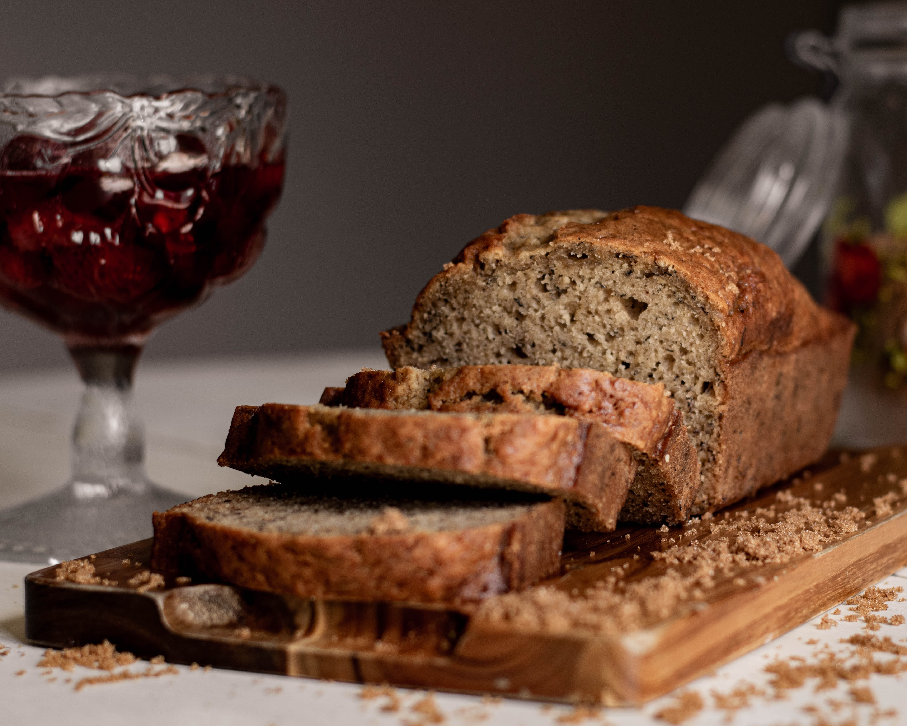

|  |
Banana Bread RecipeA classic loaf, perfect with your morning cup of coffee. This is a family recipe taught to me by my late grandmother. She used to grow the bananas in the backyard of her home in Southern China, where the climate actually supported a banana plant! Serves 10 people |
| Ingredient | Amount |
|---|---|
| Bananas | 2 to 3 (medium) |
| Butter | 1/3 cup |
| Baking soda | 1/2 teaspoon |
| Sugar | 3/4 cup |
| Eggs | 1 (large, beaten) |
| Vanilla extract | 1 teaspoon |
| All-purpose flour | 1 1/2 cups |
| Complexity | 🍞🍞 |
| Clean-up | 🍞 |
| Time required | 🍞🍞🍞 |
| Volatility | 🍞 |
Sign up to receive an exclusive recipe each week to your inbox.